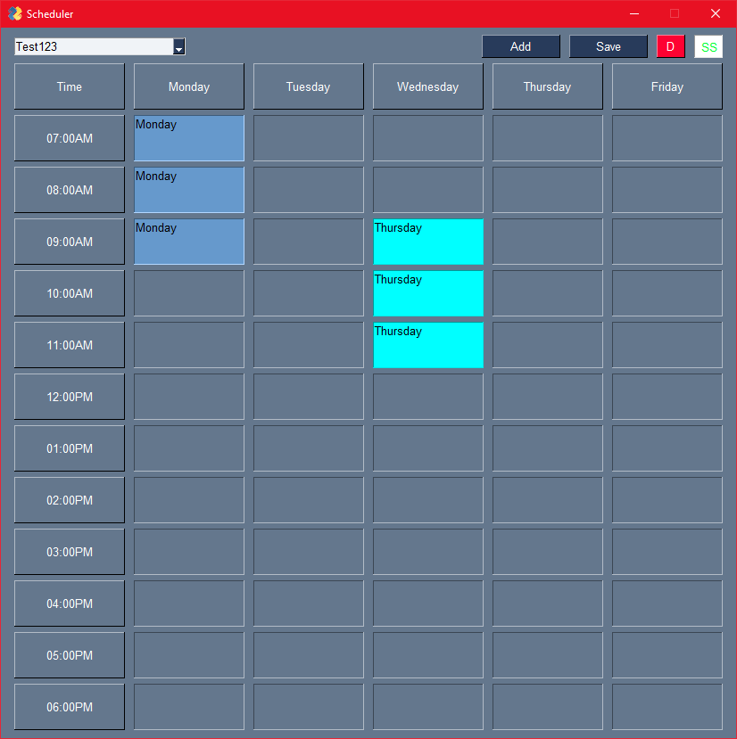

Scheduler
Desktop Timetable Manager
A lightweight, visual weekly schedule organizer built with PySimpleGUI. Plan your week with color-coded entries, multiple profiles, and one-click screenshot export.
Get Started
Features
What you can do
Visual Timetable Grid
Weekday-based layout (Mon–Fri) with hourly time slots. See your entire week at a glance.
Color-Coded Entries
Every schedule item gets a unique colour for instant visual recognition and scanning.
Multiple Profiles
Create and switch between different timetable profiles. Save and load them at any time.
Right-Click Editing
Quickly edit or delete any existing entry with a right-click — no menu hunting required.
Screenshot Export
Export your timetable as a PNG image with one click. Perfect for sharing or printing.
Persistent Storage
All timetables are saved locally to your machine and persist between sessions automatically.
Preview
The Scheduler window — a weekly grid with colour-coded schedule entries.
See it in action

Quick Start
Get up and running
Installation
pip install PySimpleGUI
python main.py
First Use
- Launch the app — you'll see an empty Mon–Fri, 7AM–6PM grid.
- Select "(New Timetable)" from the dropdown.
- Click Add to create your first schedule entry.
- Fill in the title, description, day, time, and duration.
- Click Save and give your timetable a name.